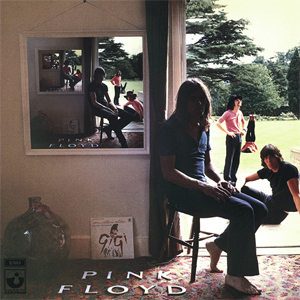
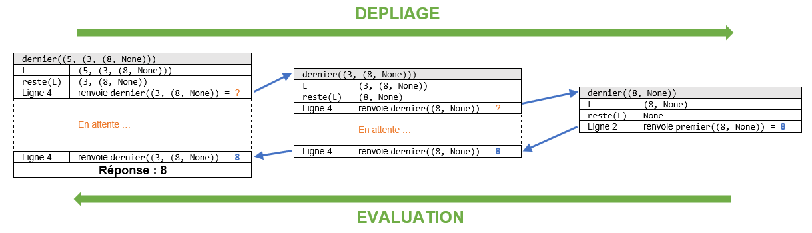
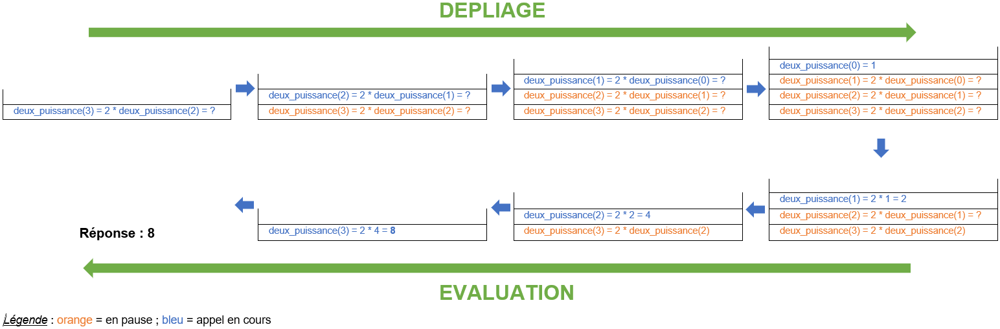

Mais le mieux est d'exécuter le programme avec l'environnement Thonny qui permet de voir en mode pas à pas les appels récursifs par ouverture d'une nouvelle fenêtre à chaque appel d'une fonction.


Commençons par quelques définitions trouvées sur Wikipédia :
Ainsi, les exemples suivants sont des cas concrets de récursivité :
Une des opérations primitives du type abstrait Liste est le constructeur construit(e, L) qui crée une liste dont la tête est l'élément e et la queue est la liste L. Pour construire la liste formée par les nombres 5, 3, 8 et 1 il fallait procéder ainsi :
construit(5, construit(3, construit(8, construit(1, listevide()))))
Ceci est une construction récursive car l'opérateur construit s'appelle lui-même à plusieurs reprises. Dans le cas de notre implémentation avec des couples, cette construction mémorisait notre liste dans le tuple suivant :
(5, (3, (8, (1, None))))
Nous avions également défini l'opération dernier(L) qui doit renvoyer le dernier élément d'une liste L. Cette opération était implémentée par la fonction suivante :
def dernier(L):
while reste(L) != listevide(): # tant que le reste de la liste n'est pas vide
L = reste(L) # on passe au reste
return premier(L) # on renvoie le premier élément de la dernière paire
Il s'agit d'une fonction écrite de manière itérative car elle ne s'appelle pas elle-même. On se propose d'écrire une version récursive de cette fonction. Il faut commencer par réfléchir un peu...
Comment obtenir le dernier élément d'une liste ?
C'est assez simple en fait :
L est égal au dernier élément du reste de L : dernier(L) = dernier(reste(L)). En effet, si L est la liste de nombres 5, 2, 8, 1 alors :dernier(L) vaut 1reste(L) est la liste de nombres 2, 8, 1 qui a aussi pour dernier élément 1 donc dernier(reste(L)) vaut aussi 1.On vient de voir que pour trouver le dernier élément d'une liste il suffit de calculer le dernier élément du reste de la liste, et répéter ce processus jusqu'à ce que le reste soit vide.
On ramène ainsi le calcul du dernier élément d'une liste au calcul du dernier élément d'une liste plus petite (reste(L)) jusqu'à ce que cela devienne impossible.
Illustration sur un exemple : pour calculer le dernier élément de la liste 5, 3, 8, 1 :
dernier(5, 3, 8, 1)dernier(reste(5, 3, 8, 1)) c'est-à-dire dernier(3, 8, 1)dernier(reste(3, 8, 1)) c'est-à-dire dernier(8, 1)dernier(reste(8, 1)) c'est-à-dire dernier(1)1 est on s'arrête ici puisque 1 n'a plus de reste. La réponse est donc 1 !Bilan : On peut récrire la fonction dernier de manière récursive de la façon suivante :
def dernier(L):
if reste(L) == listevide(): # si le reste est vide, c'est terminé
return premier(L) # et on affiche alors sa tête
else:
return dernier(reste(L)) # sinon la réponse est le dernier élément du reste
Analyse : Cette fonction est bien récursive puisqu'elle s'appelle elle-même. On trouve ici le schéma classique d'un algorithme récursif :
Comme les appels récursifs se font sur des données dont la taille diminue, on est sûr d'aboutir (au bout d'un certain nombre d'appels) au cas de base qui mettra fin aux appels récursifs, ce qui assure la terminaison de l'algorithme.
La plupart des opérations sur les listes peuvent être implémentées par des fonctions récursives.
A faire : Activité 1
Il est important de comprendre que chaque appel récursif met « en pause » l'exécution en cours, en attente d'obtenir le résultat qui est déterminé par l'appel suivant. Concrètement :
Voici deux exemples qui illustrent ces deux étapes.
dernier¶Nous récrivons cette fonction pour l'avoir sous les yeux et déroulons l'exécution de l'appel dernier((5, (3, (8, None))).
def dernier(L):
1 if reste(L) == listevide(): # si le reste est vide, c'est terminé
2 return premier(L) # et on affiche alors sa tête
3 else:
4 return dernier(reste(L)) # sinon la réponse est le dernier élément du reste
Phase de dépliage :
dernier((5, (3, (8, None)))reste(L) = (3, (8, None))dernier((3, (8, None))) qui nécessite un deuxième appel pour être évaluée. Le premier appel est donc mis en pause pour attendre le résultat du deuxième.dernier((3, (8, None)))reste(L) = (8, None)dernier((8, None)) qui nécessite un troisième appel pour être évaluée. Le deuxième appel est donc mis en pause pour attendre le résultat du troisième.dernier((8, None))reste(L) = NonePhase d'évaluation :
dernier((8, None)) pour la renvoyer. Celle-ci a été évaluée à 8 par le troisième appel donc dernier((3, (8, None))) renvoie la valeur 8.dernier((3, (8, None))) pour la renvoyer. Celle-ci a été évaluée à 8 par le second appel donc dernier((5, (3, (8, None))) renvoie la valeur 8 qui est le résultat final.On peut résumer ces étapes par le schéma ci-dessous :

On se propose d'écrire une fonction récursive (naïve) qui calcule les puissances de 2 c'est-à-dire une fonction deux_puissance(n) qui renvoie la valeur de $2^n$, où n est un entier positif.
Commençons par réfléchir à la façon dont on peut calculer $2^n$.
On a désormais tout ce qu'il faut car on sait comment passer du calcul de $2^n$ à celui de $2^{n-1}$ pour notre appel récursif et on connaît le cas de base qui sera notre condition d'arrêt de la récursion :
$$\text{deux_puissance}(n) = \left\{ \begin{array}{l} 1 \textrm{ si } n = 0 \\ 2 \times \text{deux_puissance}(n-1) \textrm{ si } n > 0 \end{array} \right.$$Voici la fonction récursive que l'on peut écrire :
def deux_puissance(n):
if n == 0: # cas de base
return 1
else: # sinon appel récursif avec un argument plus petit
return 2 * deux_puissance(n-1)
deux_puissance(3)
Nous allons représenter de différentes (autres) manières l'exécution de deux_puissance(3).
Arbre d'appel
DEPLIAGE | EVALUTATION
|
deux_puissance(3) = return 2 * deux_puissance(2) | 2 * 4 = 8
| | |
return 2 * deux_puissance(1) | 2 * 2 = 4
| | |
return 2 * deux_puissance(0) | 2 * 1 = 2
| | |
return 1 | 1Autre représentation
deux_puissance(3)
-> 2 * deux_puissance(2) -> DEPLIAGE
-> -> 2 * 2 * deux_puissance(1)
-> -> -> 2 * 2 * 2 * deux_puissance(0)
.......................................................
<- <- <- 2 * 2 * 2 * 1
<- <- 2 * 2 * 2 <- EVALUATION
<- 2 * 4
8Autre représentation (bis)
deux_puissance(3)
2 * deux_puissance(2) = ?
appel à deux_puissance(2)
2 * deux_puissance(1) = ? DEPLIAGE
appel à deux_puissance(1)
2 * deux_puissance(0) = ?
appel à deux_puissance(0)
......................................................
renvoie 1
2 * 1
renvoie 2
2 * 2 EVALUATION
renvoie 4
2 * 4
renvoie 8Empilement des appels

Utilisation d'outils
On peut visualiser avec Python Tutor le dépliage (descente) puis l'évaluation (remontée) : lien vers pythontutor.
Mais le mieux est d'exécuter le programme avec l'environnement Thonny qui permet de voir en mode pas à pas les appels récursifs par ouverture d'une nouvelle fenêtre à chaque appel d'une fonction.

Il est prouvé que tout programme récursif peut être transformé en un programme impératif et réciproquement (même si ce n'est pas toujours évident). Quel choix doit-on faire pour écrire un programme ?
Puissances de deux - version itérative
def deux_puissance_iter(n):
reponse = 1
for i in range(n):
reponse = reponse * 2
return reponse
Puissances de deux - version récursive
def deux_puissance_rec(n):
if n == 0:
return 1
else:
return 2 * deux_puissance_rec(n-1)
La façon de raisonner n'est pas la même selon la méthode :
Ces deux méthodes de raisonnement sont respectivement à la base de la programmation impérative (que nous avons utilisé jusqu'à présent) et de la programmation fonctionnelle que nous étudierons cette année. En particulier, vous verrez que les fonctions récursives se traduisent très facilement en des fonctions respectant le paradigme de programmation fonctionnelle.
Même si la méthode impérative nous est plus familière, il faut reconnaître que la méthode récursive est plus élégante, plus lisible et souvent plus courte à écrire car elle évite d'utiliser de nombreuses structures itératives.
De plus, la méthode récursive est très utile pour écrire des algorithmes sur des structures de données abstraites comme les listes, les arbres et les graphes. Elle est également souvent utilisée pour écrire des algorithmes de la catégorie « diviser pour régner ». Nous étudierons tout cela cette année.
Le modèle électronique d'un ordinateur est impératif, donc tout programme doit être complilé en itératif. Un programme récursif doit donc être dérécursivé (traduit en itératif) par le compilateur pour être exécuté. Cette phase de dérécursivation implique qu'un programme récursif s'exécute toujours (un peu) plus lentement qu'un programme itératif, mais l'ordre de grandeur est le même.
Nous avons vu que l'exécution d'un programme récursif entraînait des appels récursifs qui sont successivement mis en attente du résultat de l'appel suivant. Il est donc nécessaire de stocker en mémoire le contexte dans lequel chaque appel de la fonction a lieu (la valeur de ses paramètres, l'adresse mémoire de retour). En pratique, lors de la descente (phase de dépliage), ces contextes sont empilés au fur et à mesure les uns au-dessus des autres et sont dépilés au fur et à mesure lors de la remontée (phase d'évalution) comme sur le dernier schéma d'exécution.
L'environnement Thonny permet de bien visualiser cet empilement/dépilement des différents contextes d'appels.
Cet empilement (et dépilement) est assuré par une structure de données abstraite appelée pile que nous étudierons également cette année. Le dernier schéma proposé correspond à ce qu'on appelle la pile d'exécution de la fonction récursive. Cette pile est coûteuse en mémoire et rend les programmes récursifs plus coûteux en mémoire. De plus, cette pile n'a pas une taille infinie ce qui limite le nombre d'appels récursifs possibles : s'il y en a trop, la pile devient pleine et le programme terminera par une erreur.
Certains langages de programmation spécialisés dans l'écriture de programmes récursifs savent optimiser cela et ainsi éviter tout débordement de la pile. C'est le cas des langages fonctionnels (comme LISP) mais ce n'est le cas de Python.
En Python, le nombre d'appels récursifs est limité. Si on le dépasse, une erreur de type RecursionError est levée. On peut le voir facilement :
deux_puissance_rec(3000)
La version itérative renvoie le résultat :
deux_puissance_iter(3000)
A faire : Activités 2, 3, 4 et 5
Références :
Germain BECKER, Lycée Mounier, ANGERS
Ressource éducative libre distribuée sous Licence Creative Commons Attribution - Pas d’Utilisation Commerciale - Partage dans les Mêmes Conditions 4.0 International